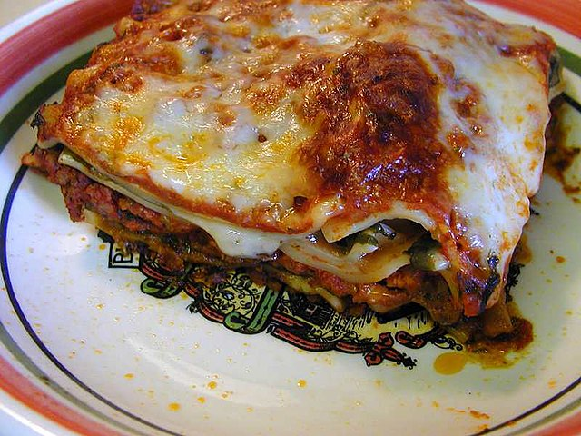

**Homemade meat lasagna. Traditional recipe step by step**
 Imagine a homemade lasagna, a true feast that combines layers of tender, perfectly baked pasta filled with a rich blend of beef, pork, and a variety of aromatic herbs.
The sauce, simmered slowly with fresh tomatoes, onions, garlic, and a splash of white wine, melds with the melted cheese mixture to create an unparalleled flavor experience. Each bite is a symphony of textures and flavors that awaken the palate and transport you to a cozy, family kitchen.
It’s a classic that not only fills the stomach but also nourishes the soul!
INGREDIENTS
For the filling (meat bolognese): 500 g. meat (a mix of pork and beef)
2 red peppers2 carrots2 garlic cloves150g. bacon or pancetta2 large onions250 g. of natural tomato (approximately 1 glass)
250 ml of white wine (approximately 200 ml)100 ml. extra virgin olive oil1 heaping teaspoon dried oregano (or Provencal herbs)Salt and freshly ground black pepper (to taste)
For the lasagna:12 layers of lasagna or Garofalo lasagnaTo make the bechamel: (for about a litre, enough for the lasagna): 125 g of all-purpose wheat flour
125 g butter1 liter of whole milkA pinch of nutmeg (about 4 g.)Salt and freshly ground black pepper (to taste)To finish and gratinate the lasagna: 100-120 g of grated Grana Padano cheese (or mix with your favorite cheese to gratinate)
Preparation of the lasagna
- Heat a large pot of water, the widest one in the house. When it starts to boil, add 2 generous handfuls of salt.
- We put the lasagna sheets in one by one without touching each other (so that they don't stick together).
Now we can find many types of lasagna where it doesn't have to be hydrated as it was done before. At home, I often use lasagna sheets that are hydrated with the béchamel and the juice released by the sauce when baking, to save time.
- If you make it the traditional way, you have to stir it with a wooden spoon and after about 10 minutes you will take out the sheets.
We stretch them on some sheets of kitchen paper. Even if it seems that they are not ready, they will end up cooking in the oven.
- The next step is to wash all the vegetables that we are going to use in the filling very well. In the recipe I recommend the filling with the classic Bolognese sauce , carrots, garlic, peppers and onion.
How to make meat lasagna filling
- Cut the vegetables into small pieces so that they blend well in the sauce. Cut the carrots as thinly as possible. I recommend slicing them with a potato peeler because thick strips won't cook when you poach them. Put everything aside in a bowl.
-
In another saucepan, add extra virgin olive oil. Start by sautéing the onion and garlic. When it is golden, add the rest of the ingredients.
-
Sauté everything at a medium temperature for about 15 minutes and wait for the meat to come out. Season the meat to taste and add it to the pan with the vegetables.
Let it cook for 5 minutes and when you see that it is changing colour, add the bacon or pancetta in very small pieces. Pour in a glass of white wine and wait for it to reduce (another 5 minutes on a medium heat).
-
Add a glass of natural tomato, a teaspoon of oregano and adjust the salt and pepper if necessary (taste the sauce to see if it is to your liking). Stir the meat with the vegetables and remove from the heat, let it cool a little
-
Preheat the oven to 200º C for 15 minutes, just enough time to make the rest of the lasagna.
Preparation of the bechamel sauce and end of the recipe
-
While the sauce rests, we will prepare the bechamel , which can be made creamier or thicker depending on the measurements. On the blog you can find the recipe for this cream with all the details.
-
To assemble the lasagna, it is very simple. Put a few spoonfuls of bechamel sauce on the bottom of the dish. On top of the sheets, a layer of the mixture with the meat on each sheet, then the bechamel sauce again and so on until you have 3 layers
-
You can make as many layers of lasagna as you like, well, as many as your dish allows. Finally, top it off with a generous layer of bechamel sauce. And for those who like cheese, grate the one you like best, which is especially for gratinating. I recommend a Grana Padano aged cheese.
-
Bake in the middle tray for 15 minutes at 180º C and for 3-5 minutes on the top rack with the grill on so that it browns. Ready to eat, no need to rest, from the oven to the table.
-
This recipe is not only cheap but also healthy, full of protein and carbohydrates. I always serve it as a main dish. I hope you like it.
Tips for a delicious lasagna
Good ingredients and a little skill or technique in the kitchen will be the allies for an unbeatable lasagna. I always tell you that with good raw materials the result will, logically, be much better. And a little time or love, to make it even better than your mother's.
The filling for this lasagna is the classic Bolognese sauce that you can find on the blog. Although you can add whatever you like at home, a little celery, some wild asparagus or some eggplants are perfect. Use your imagination and you will make an unbeatable lasagna.
There you have it, serve it warm. I assure you that it will serve 4 people generously. You will see how successful you will be at home with this recipe, it is simply delicious. If you are one of those who can last the whole afternoon without yawning with a coffee, try something more powerful like chorizo or blood sausage.
I hope you like it and learn well from this recipe...